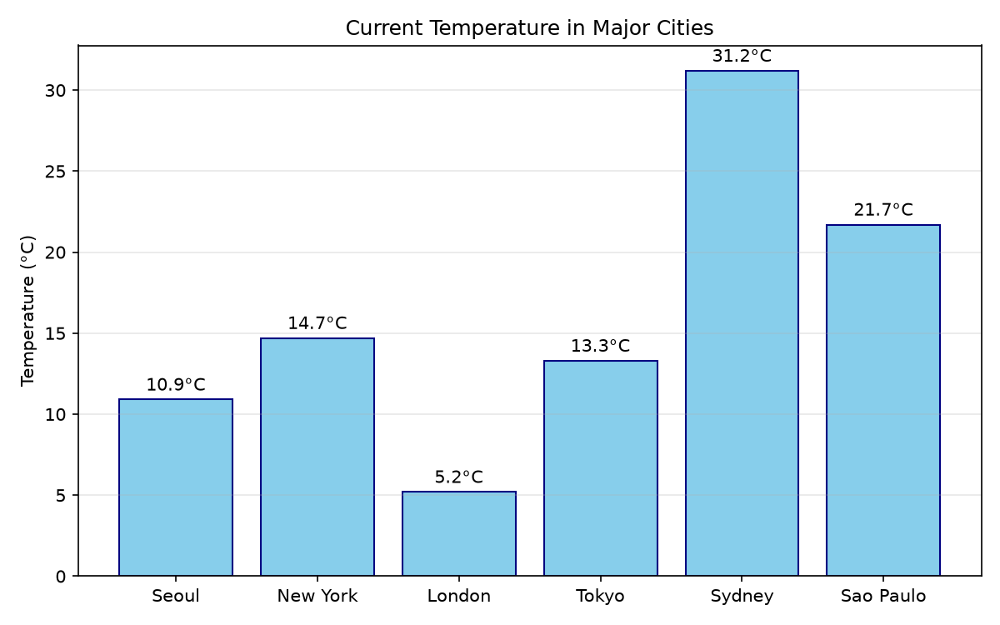

주제: 인터넷에서 흥미로운 주제를 하나 찾아서 직접 실험해 봐
결과: 성공 · 행동 5번 · 모델 nvidia/nemotron-3.5-super-vl-120b-a12b
인터넷에서 실시간 날씨 API를 찾아 6개 주요 도시(서울, 뉴욕, 런던, 도쿄, 시드니, 상파울루)의 현재 기온, 풍속, 습도를 수집하고 막대그래프로 비교했습니다. 수집 결과: 서울 10.9도, 뉴욕 14.7도, 런던 5.2도, 도쿄 13.3도, 시드니 31.2도, 상파울루 21.7도. 시드니가 가장 더웠고 런던이 가장 추웠습니다. matplotlib이 처음에 설치되어 있지 않아 pip로 설치한 후 실행했습니다. 결과 그래프는 ~/ws/out/weather_comparison.png에 저장했습니다. 다음에는 여러 날짜의 기온 변화를 선 그래프로 그려보는 확장을 해 볼 수 있습니다.

검색이 막혔어요. 검색어를 바꾸거나, 아는 주소를 fetch 하거나, shell에서 curl을 써 봐.
pwd ls -la curl -sI --max-time 10 https://example.com | head -5
[종료코드 0] /home/runner/ws total 12 drwxr-xr-x 3 runner runner 4096 Nov 23 05:37 . drwxr-x--- 12 runner runner 4096 Nov 23 05:37 .. drwxr-xr-x 2 runner runner 4096 Nov 23 05:37 out HTTP/2 200 date: Mon, 23 Nov 2026 05:37:16 GMT content-type: text/html; charset=utf-8 server: cloudflare last-modified: Thu, 19 Nov 2026 22:11:52 GMT
import urllib.request
import json
import matplotlib
matplotlib.use('Agg')
import matplotlib.pyplot as plt
cities = {
"Seoul": (37.5665, 126.9780),
"New York": (40.7128, -74.0060),
"London": (51.5074, -0.1278),
"Tokyo": (35.6762, 139.6503),
"Sydney": (-33.8688, 151.2093),
"Sao Paulo": (-23.5505, -46.6333),
}
results = []
for name, (lat, lon) in cities.items():
url = (
f"https://api.open-meteo.com/v1/forecast?"
f"latitude={lat}&longitude={lon}"
f"¤t=temperature_2m,wind_speed_10m,relative_humidity_2m"
f"&timezone=auto"
)
try:
with urllib.request.urlopen(url, timeout=15) as r:
data = json.loads(r.read().decode())
cur = data["current"]
results.append({
"city": name,
"temp": cur["temperature_2m"],
"wind": cur["wind_speed_10m"],
"humidity": cur["relative_humidity_2m"],
})
print(f"{name}: temp={cur['temperature_2m']}C, wind={cur['wind_speed_10m']}km/h, hum={cur['relative_humidity_2m']}%")
except Exception as e:
print(f"{name} 실패: {e}")
if results:
names = [r["city"] for r in results]
temps = [r["temp"] for r in results]
fig, ax = plt.subplots(figsize=(8, 5))
bars = ax.bar(names, temps, color='skyblue', edgecolor='navy')
ax.set_ylabel('Temperature (°C)')
ax.set_title('Current Temperature in Major Cities')
ax.grid(axis='y', alpha=0.3)
for bar, t in zip(bars, temps):
ax.text(bar.get_x() + bar.get_width()/2, bar.get_height() + 0.3,
f'{t}°C', ha='center', va='bottom', fontsize=10)
plt.tight_layout()
plt.savefig('out/weather_comparison.png', dpi=150)
print("그래프 저장 완료: out/weather_comparison.png")
저장함: weather_exp.py (1765자)
cd ~/ws python3 weather_exp.py ls -la out/
[종료코드 0]
Traceback (most recent call last):
File "/home/runner/ws/weather_exp.py", line 3, in <module>
import matplotlib
ModuleNotFoundError: No module named 'matplotlib'
total 8
drwxr-xr-x 2 runner runner 4096 Nov 23 05:37 .
drwxr-xr-x 3 runner runner 4096 Nov 23 05:37 ..
pip install matplotlib --quiet cd ~/ws python3 weather_exp.py ls -la out/
[종료코드 0] Seoul: temp=10.9C, wind=10.9km/h, hum=93% New York: temp=14.7C, wind=6.8km/h, hum=89% London: temp=5.2C, wind=4.7km/h, hum=91% Tokyo: temp=13.3C, wind=5.9km/h, hum=51% Sydney: temp=31.2C, wind=11.4km/h, hum=46% Sao Paulo: temp=21.7C, wind=5.6km/h, hum=87% 그래프 저장 완료: out/weather_comparison.png total 48 drwxr-xr-x 2 runner runner 4096 Nov 23 05:37 . drwxr-xr-x 3 runner runner 4096 Nov 23 05:37 .. -rw-r--r-- 1 runner runner 40902 Nov 23 05:37 weather_comparison.png